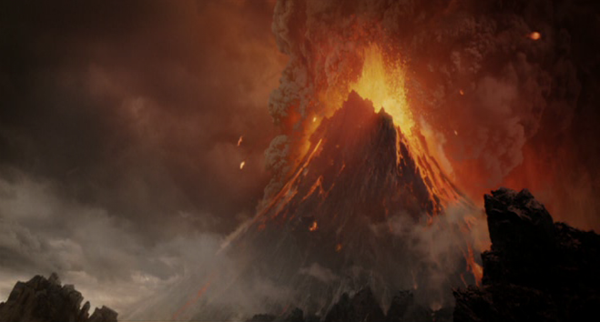

Na obra de J. R. R. Tolkien, Mordor é a região ocupada e controlada por Sauron, no sudeste do noroeste da Terra Média e ao leste do Anduin, o grande rio. Orodruin, um vulcão em Mordor, era o destino da Sociedade do Anel (e mais tarde Frodo Baggins e Samwise Gamgee) na missão de destruir o Um Anel.
Mordor era único por causa das três enormes cadeias de montanhas que o rodeiam, a partir do norte, do oeste e do sul. Ambas as montanhas protegiam a terra de uma invasão inesperada por qualquer uma das pessoas que viviam nessas direções e mantinha aqueles que viviam no local fáceis de escapar. Tolkien relatou ter identificado Mordor com o vulcão de Stromboli, na Sicília.